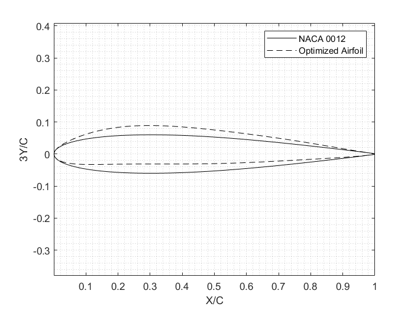
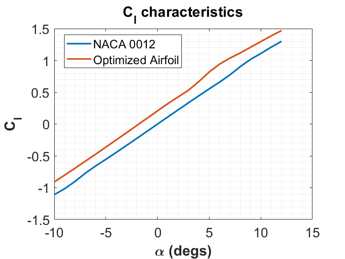
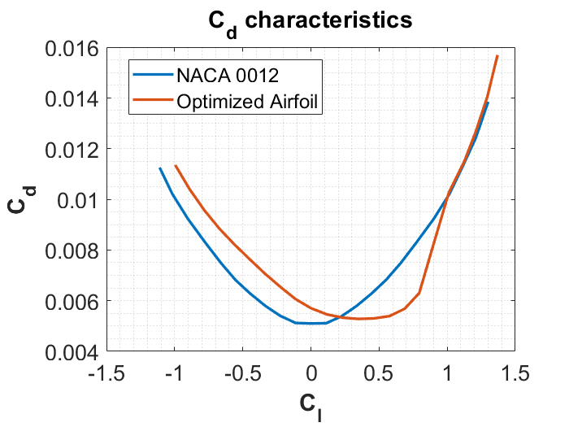

Airfoil Optimization
This was part of a research project I worked on in Summer ‘19 at the UIUC Aerospace Department. The goal was to create an optimization script in MATLAB to interface with Xfoil and create optimal airfoils at set PARSEC design parameters. This was my first ever experience doing research and working with MATLAB so it's definitely a little rough around the edges. 😅😅😅

A small snippet of the main optimizer
Results
Our base airfoil was the NACA 0012 that we started with and then optimized to suit our design requirements.

We observed improvements in lift across all angles of attack compared to our beginning airfoil

At and around our target Cl of 0.5, we observed significant reductions in drag
